Analysis conducted through the Michael Jordan Archive’s Jersey Index reveals several patterns that challenge common assumptions about the number of game-worn Michael Jordan jerseys that exist today.
Two observations from this research may surprise many collectors.
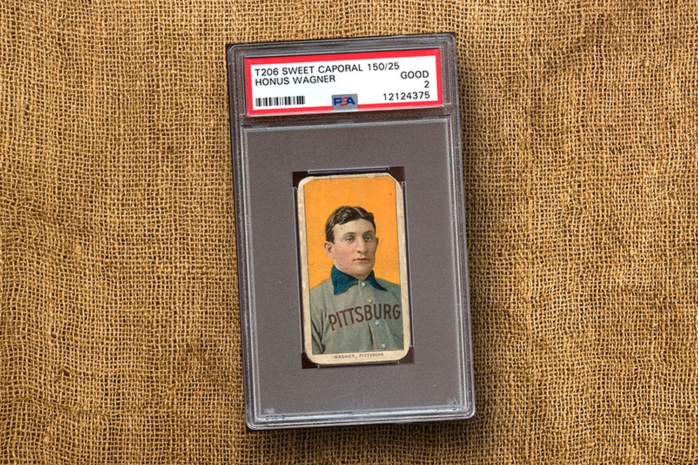
Our first observation is that there are fewer publicly known Michael Jordan Chicago Bulls jerseys than T206 Honus Wagner cards. As of March 2026, the population of T206 Wagner cards includes 37 examples graded by PSA, 18 graded by SGC, and a small number of ungraded copies held in museums and private collections, bringing the estimated total population into the 60s. By comparison, research conducted for the Michael Jordan Archive has identified 42 publicly known Chicago Bulls jerseys worn by Michael Jordan across all seasons.
The second observation may be even more surprising. Throughout his thirteen seasons with the Chicago Bulls, Michael Jordan appears to have worn just over 100 game jerseys in total.
HISTORY OF GAME-WORN JORDAN JERSEYS
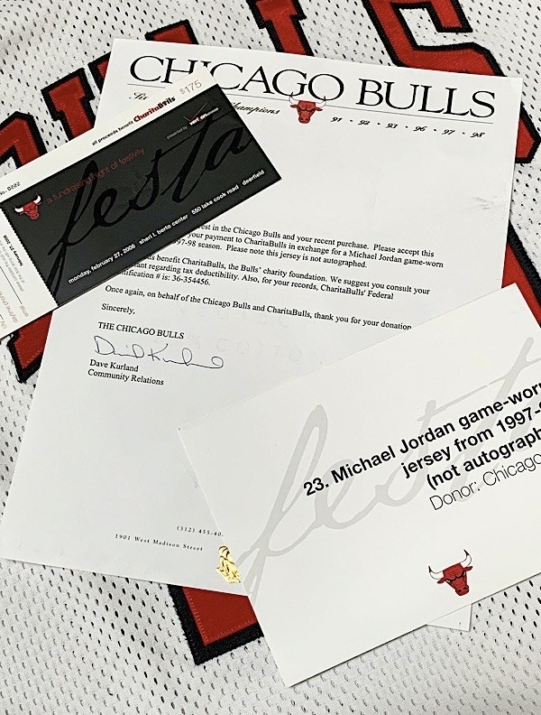
The Chicago Bulls were among the first professional teams to recognize the growing collector demand for game-worn uniforms.
During the 1990s, jerseys were periodically released through charity events such as the annual Festabulls auction and dinner, where game-used memorabilia was sold to benefit team charities.
In the years that followed, additional jerseys entered the hobby through direct sales to collectors. It is not uncommon for Michael Jordan jerseys appearing at auction today to be accompanied by Charitabulls letters issued between roughly 2004 and 2010 documenting their release from the team.
At the time, however, the market for game-worn jerseys was still developing. Jerseys that sold for close to $40,000 while Jordan was actively playing sometimes changed hands for $10,000–$15,000 after his departure from the Bulls.
DOCUMENTED POPULATION BY SEASON
With that context in mind, the Jersey Index allows us to examine the currently documented population of Michael Jordan Chicago Bulls jerseys season by season. The numbers presented here reflect research based on available game imagery, artifact documentation, and confirmed photo matches.
While additional jerseys and previously unseen imagery will likely surface over time, the overall pattern is already clear. Throughout much of Jordan’s career, the number of jerseys placed into circulation each season was remarkably small, with many garments worn across multiple games and extended stretches of the schedule.
The following overview summarizes what is currently known about the population of Jordan Bulls jerseys for each season.
1984–85 Season
Michael Jordan’s rookie season with the Chicago Bulls provides an early example of how limited uniform rotations were during the era. Two jerseys associated with Jordan from the preseason and a promotional photo shoot have surfaced in recent years, including a red preseason jersey that sold at auction in 2025.
Interestingly, that garment appears to have been repurposed from a prior Bulls player during the previous season, reflecting the practical inventory practices common among NBA teams at the time.
For the 1984–85 season, available evidence indicates that Jordan was issued one home jersey and one road jersey. During the mid-1980s it was common for NBA players to wear the same uniforms throughout an entire season, and those two garments appear to have served as Jordan’s primary jerseys for the duration of his rookie year.
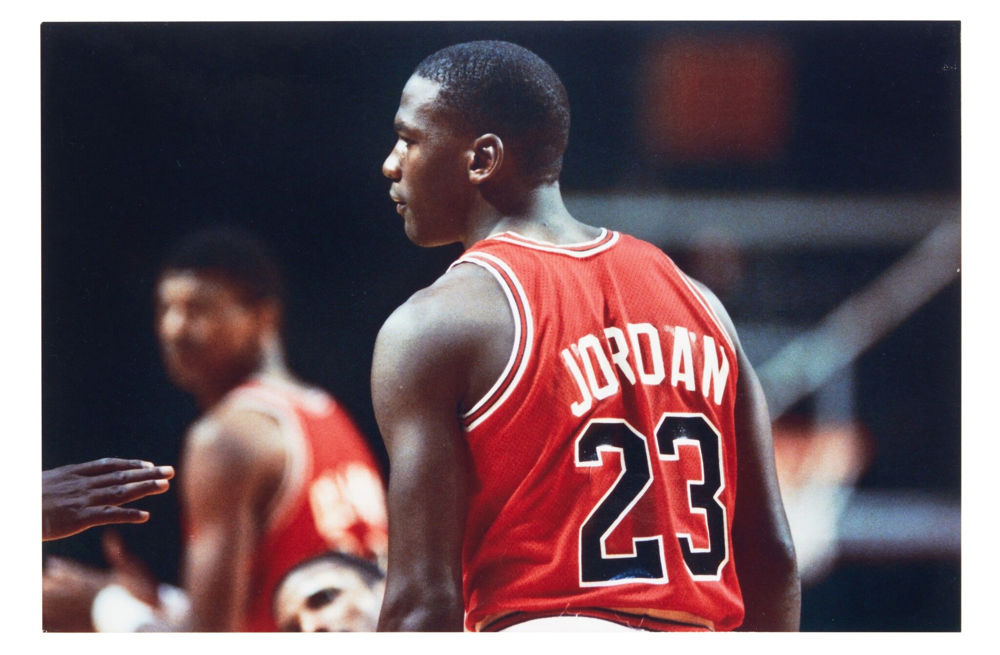
1985–86 Season
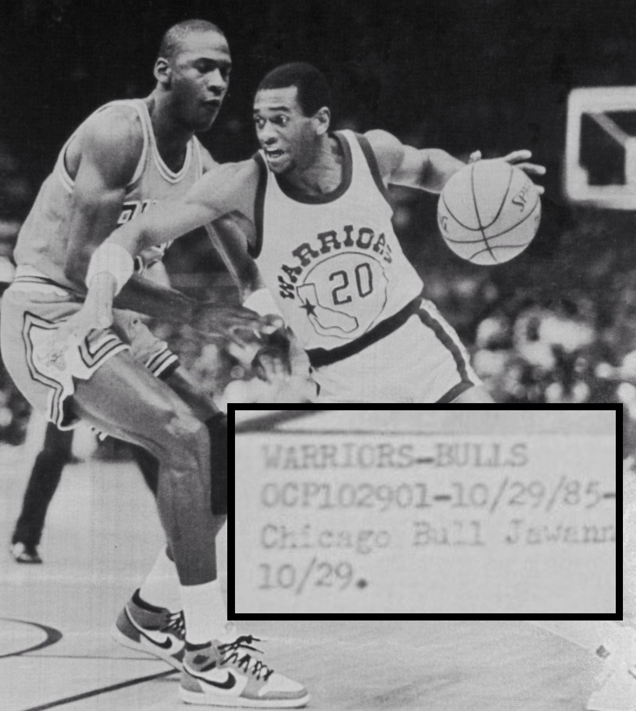
Jordan’s second season with the Bulls began normally before being abruptly interrupted by injury. After opening the season at home, the Bulls traveled west to face the Golden State Warriors. During that game on October 29, 1985, Jordan played only 18 minutes before suffering the broken foot that sidelined him for most of the season.
The road jersey worn during the Warriors game appears to represent a separate garment within the documented population. That jersey has been photo matched to a promotional photo shoot conducted shortly before the start of the season, providing an example of how preseason media sessions can help identify and date specific uniforms.
Jordan did not return to the lineup until March 15, 1986, nearly five months after the injury. Evidence suggests that upon his return he was issued a new home and road jersey set. Those garments appear to have carried through the remainder of the regular season and playoffs, and continued into the start of the 1986–87 preseason.
The Bulls qualified for the playoffs, where Chicago faced the Boston Celtics in the first round. In Game 2 of that series Jordan delivered one of the most famous performances of his career, scoring 63 points at Boston Garden.
1986–87 Season
The 1986–87 season marked Jordan’s first full year back following the injury-shortened campaign of the previous season.
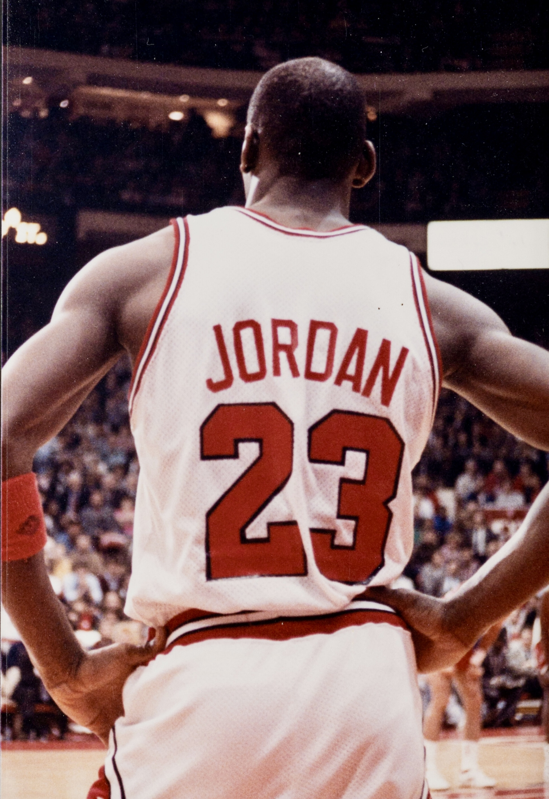
Once the regular season began, research conducted for the Jersey Index indicates that Jordan wore only one home set and one road set during the 1986–87 season.
Taken together, the documented imagery accounts for every Bulls home game that year. This provides a clear example of how a single garment could represent an entire season of play.
During this period NBA teams typically rotated very few uniforms, and a single jersey could correspond to dozens of games when examined through the lens of photo-matching research.
Jordan’s performance during the season was historic. He averaged 37.1 points per game and recorded multiple scoring outbursts throughout the year, reinforcing how a small number of jerseys could correspond to a remarkably large number of games.
1987–88 Season
At present, no jerseys from the 1987–88 season have been publicly documented within the Jersey Index. While this absence may appear unusual at first glance, it reflects the broader reality of early NBA uniform practices and the limited number of garments that were typically placed into circulation.
During this period, teams often maintained very small jersey rotations, and many uniforms simply remained with the organization after the season concluded. In other cases, garments may have been retained by players themselves or entered private collections without ever appearing publicly. Michael Jordan has periodically displayed sets from his career and some pieces have appeared on loan to museums, illustrating how certain jerseys may remain outside the hobby despite their historical significance.
Jordan’s 1987–88 season was one of the most significant of his early career. He captured both the NBA Most Valuable Player award and the Defensive Player of the Year honor, while continuing to establish himself as the league’s most dominant player. The absence of documented jerseys from such an important season highlights how incomplete the surviving population of early NBA game-worn uniforms can be.
1988–89 Season
The 1988–89 season provides the first clear example of how a single jersey could remain in rotation for an extended portion of the schedule. Research conducted for the Jersey Index has identified a white home jersey that appears to have been worn across a large stretch of the season.
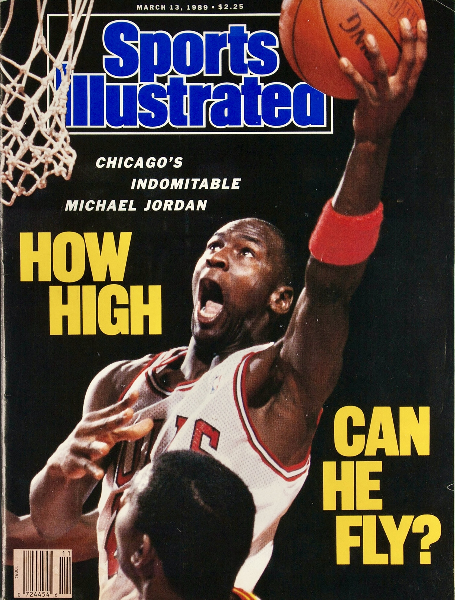
The garment has been photo matched to at least eleven games between December 10, 1988 and June 2, 1989, with many additional matches supported by internal archival research.
The same jersey also appears on a Sports Illustrated cover from the period, further illustrating how widely a single garment could be used when teams rotated only a very small number of uniforms during the era.
Examples such as this help demonstrate one of the central themes of the Jersey Index: during the late 1980s, a single uniform could account for a substantial number of games when examined through the lens of photo matching and archival imagery.
1989–90 Season
The 1989–90 season provides one of the clearest examples of how multiple production runs of Chicago Bulls jerseys could remain in circulation at the same time. Research conducted for the Jersey Index has identified two red road jerseys worn by Michael Jordan during the season, and together these garments account for more than thirty games of documented use.
What makes these jerseys particularly notable is their tagging. One example carries Sand-Knit tagging from the 1986–87 production cycle, while the second originates from the 1987–88 production run. Despite the earlier tag years, both garments were clearly worn by Jordan during the 1989–90 season, demonstrating how uniforms produced in prior years could remain in active rotation when the team’s design remained unchanged.
The season also produced one of the more unusual moments in Jordan’s career. Prior to a February 9, 1990 game in Orlando, Jordan’s jersey was stolen from the visiting locker room, forcing him to briefly wear a number 12 Bulls jersey without a nameplate.
While that garment was only used for a short portion of the game, the incident illustrates how teams sometimes kept spare uniforms available for unexpected situations.
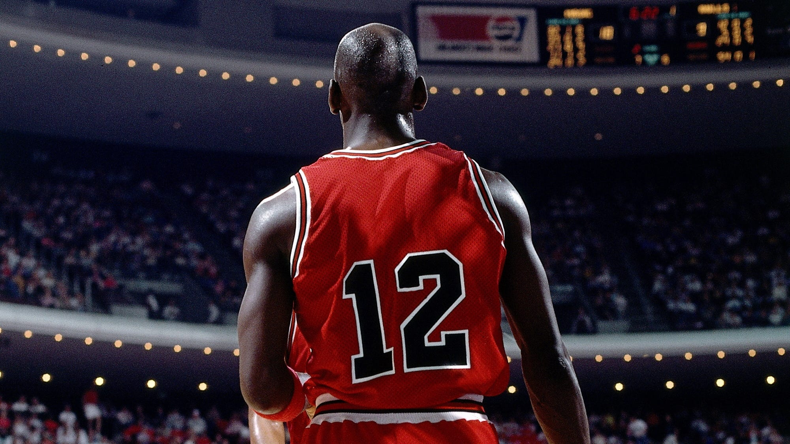
Another interesting aspect of the 1989–90 season involves jerseys bearing 1989–90 Sand-Knit tagging that have surfaced in the hobby. While several examples are known, none have been conclusively photo matched to game imagery. This absence is notable given the documented use of earlier production jerseys during the same season.
When Jordan’s jersey was stolen prior to the Orlando game, he did not simply change into another number 23 uniform, which suggests the Bulls may not have had an additional 1989–90 tagged Jordan jersey immediately available in the locker room.
Taken together, the evidence indicates that while jerseys bearing 1989–90 tagging exist, they may not have been part of Jordan’s active game rotation during the season. The two documented road jerseys therefore provide important insight into the Bulls’ inventory practices during the late 1980s, when garments from multiple production cycles could remain in use simultaneously.
1990–91 Season
The 1990–91 season marked a turning point in Michael Jordan’s career as the Chicago Bulls captured the first championship in franchise history. Despite the historical significance of the season, no jerseys from the 1990–91 campaign have ever publicly surfaced or been conclusively documented within the Jersey Index.
This absence reflects the same uniform practices that characterized the late 1980s and early 1990s. NBA teams typically maintained very small jersey rotations, and many uniforms simply remained with the organization after the season concluded. Others may have been retained by players or entered private collections without ever appearing publicly.
The season culminated in the 1991 NBA Finals, where the Bulls defeated the Los Angeles Lakers to secure Jordan’s first championship. While the games themselves have become some of the most recognizable moments of his career, the absence of documented uniforms from the season highlights how incomplete the surviving population of early NBA game-worn jerseys can be.
One jersey from the broader 1991 season is known to exist outside of the Bulls uniform set. Michael Jordan’s jersey worn during the 1991 NBA All-Star Game has surfaced publicly, providing a rare surviving garment from that year. While it does not represent a Chicago Bulls uniform and therefore falls outside the primary scope of the Jersey Index population study, its existence highlights how few game-worn jerseys from this period have entered the public hobby.
1991–92 Season
Jordan’s second championship season with the Bulls followed a pattern similar to several earlier years in his career. Despite the historical significance of the 1991–92 campaign, no jerseys from this season have ever publicly surfaced or been conclusively documented within the Jersey Index.
As with other seasons from the early 1990s, the absence of documented garments likely reflects the limited number of jerseys that were placed into circulation during the era. Teams typically issued only a small number of uniforms each season, and many of those garments remained with the organization or were retained privately by players rather than entering the collecting hobby.
The Bulls completed another dominant season, culminating in a second consecutive NBA championship after defeating the Portland Trail Blazers in the 1992 NBA Finals. While the games themselves are well documented through broadcast and photographic archives, the lack of surviving jerseys from the season again illustrates how incomplete the population of early NBA game-worn uniforms can be when viewed decades later.
1992–93 Season
The 1992–93 season provides another clear example of how a very small number of jerseys could account for a large portion of a player’s games during the era. Research conducted for the Jersey Index indicates that Jordan likely wore two road jerseys throughout the season, with available imagery suggesting a similar rotation for the white home uniforms.
One red road jersey in particular has been extensively documented. The garment has been photo matched to games spanning November 13, 1992 through March 11, 1993, covering a substantial portion of the season and demonstrating how a single uniform could remain in rotation for months at a time.
Despite the historical importance of the season — which concluded with the Bulls capturing their third consecutive NBA championship — no jerseys from the 1992–93 campaign have publicly surfaced within the hobby. The available imagery nevertheless provides a clear picture of the team’s uniform rotation, reinforcing how limited the number of garments in use was during this period of Jordan’s career.
1994–95 Season
Following the Bulls’ third consecutive championship in 1993, Michael Jordan stepped away from basketball, leading to a brief retirement that kept him out of the NBA for the entire 1993–94 season. Jordan returned late in the following campaign, rejoining the Bulls on March 18, 1995.
Upon his return, Jordan wore number 45, the number he had briefly worn earlier in his career and during his baseball stint. He continued wearing number 45 through the end of the regular season and into the playoffs.
During the Eastern Conference Semifinals against the Orlando Magic, Jordan requested that the Bulls unretire his familiar number 23, returning to it for the remainder of the series.
The change came after a memorable moment in Game 1 of the series. Following a late turnover by Jordan, Orlando Magic guard Nick Anderson famously remarked, “No. 45 is not No. 23.” In Game 2, Jordan returned to the court wearing number 23 once again and responded with 38 points, marking the beginning of the number’s return for the remainder of the postseason.
Despite the historical significance of this brief return season and the mid-playoff number change, no jerseys from the 1994–95 campaign have ever publicly surfaced, either from the number 45 portion of the season or from the playoff games in which Jordan resumed wearing number 23. Given the circumstances of the number change, it is possible that the number 23 jersey used during the playoffs may have been drawn from existing team inventory or even reused from earlier stock.
1995–96 Season
The 1995–96 season marked Jordan’s first full year back with the Bulls following his return late in the previous campaign. The team produced one of the most dominant seasons in NBA history, finishing with a 72–10 record and capturing the franchise’s fourth championship. The season also marked the introduction of the Chicago Bulls’ black alternate uniform, adding a third jersey style to the team’s rotation for the first time during Jordan’s career.
One jersey from the season is publicly known. A white home uniform attributed to the 1995–96 campaign is currently displayed at the Smithsonian Institution. Research conducted for the Jersey Index confirms that this garment was worn across a large portion of the season, beginning around midseason and continuing through the NBA Finals.
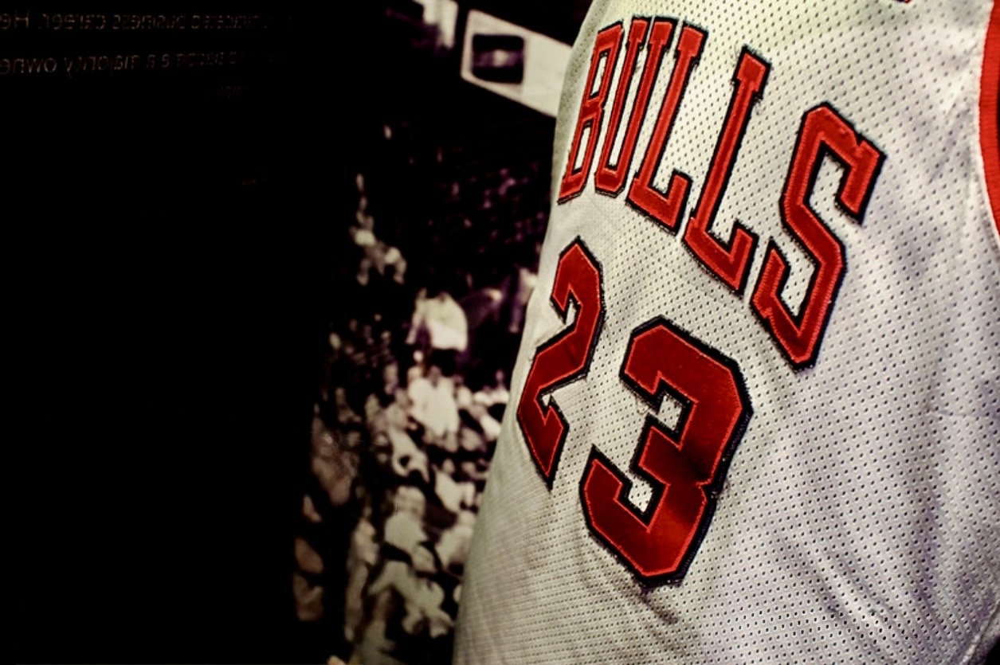
Jordan’s donation of the jersey to the Smithsonian also confirms that he retained some items from his storied career, offering a rare glimpse into how certain historically significant garments have been preserved outside of the collecting hobby.
The jersey now carries the 1996 Finals patch, which was added to the garment prior to the championship series. This confirms that the same jersey remained in rotation from the regular season through the Finals, further illustrating how a single uniform could account for a substantial number of games during this period of Jordan’s career.
1996–97 Season
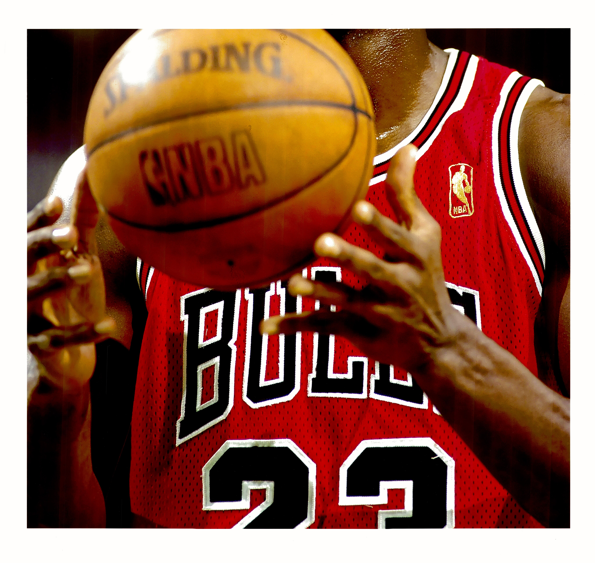
The 1996–97 season provides one of the clearest views into the jersey rotation used by Jordan during the later years of his Bulls career. By this point, slightly more uniforms appear to have entered circulation than in earlier seasons, though the total number of garments still remained relatively small by modern standards. The season also marked the NBA’s 50th anniversary, and all league uniforms featured a gold NBA logo patch for the entirety of the year.
One red road jersey from the season has been extensively documented through photo matching. The garment has been matched to 17 games between December 19, 1996 and April 10, 1997, with the possibility of several additional appearances during that stretch. This again illustrates how a single jersey could remain in rotation across a significant portion of the schedule.
Additional uniforms from the season have also been identified through game imagery. Evidence indicates the use of a white home jersey worn on March 18, 1997, as well as a black alternate jersey worn on April 13, 1997. The introduction of the black alternate uniform earlier in the decade added another element to the Bulls’ rotation, though the number of garments worn by Jordan during the season still appears limited.
Taken together, the documented jerseys from the 1996–97 season show a modest increase in the number of uniforms used compared with earlier years, while still reinforcing the broader pattern observed throughout Jordan’s career: a relatively small group of jerseys accounting for a large number of games.
1997–98 Season
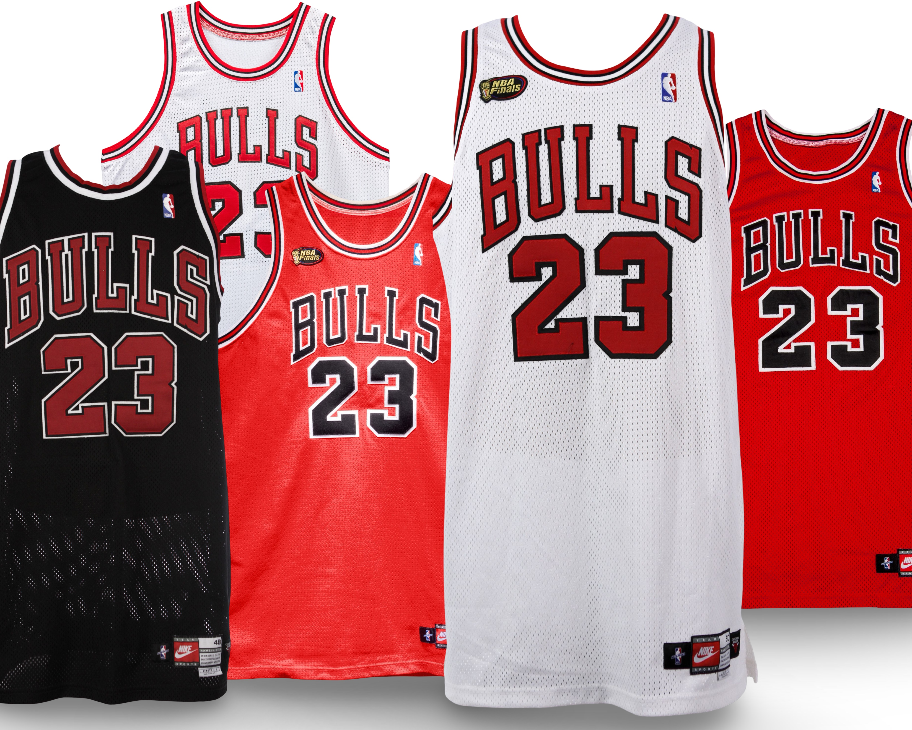
The 1997–98 season stands apart from every other year of Michael Jordan’s Chicago Bulls career. Widely remembered as the Bulls’ final championship run and later immortalized as “The Last Dance,” the season produced a significantly larger number of game-worn jerseys than any prior campaign. The combination of historical significance and growing collector interest appears to have contributed to a broader uniform rotation than had been seen during earlier years of Jordan’s career.
Research conducted for the Jersey Index has identified a confirmed hobby population of 32 jerseys from the season, including 23 publicly documented examples and 9 privately owned garments verified through direct research and owner cooperation. Together these jerseys represent the complete known hobby population from the Bulls’ final championship season.
Beyond the surviving hobby population, a complete reconstruction of the season’s uniform usage can also be made through extensive photographic analysis. By reviewing game imagery across the regular season and playoffs, the Jersey Index identifies 30 home jerseys, 17 red road jerseys, and 6 black alternate jerseys worn during the 1997–98 campaign. These figures include the known hobby population as well as additional garments that have never surfaced publicly but can be identified through game imagery and uniform characteristics.
The increased number of jerseys used during the season likely reflects the unique circumstances surrounding the Bulls’ final championship run. By the start of the 1997–98 campaign, it was widely understood that the season might represent the final chapter of the Bulls dynasty and possibly Jordan’s last year with the organization. At the same time, the market for game-worn memorabilia had grown significantly compared with earlier years. These factors likely contributed to a larger number of jerseys being placed into rotation and ultimately entering the collecting hobby.
The contrast with earlier seasons is striking. For much of Jordan’s career, a single jersey could remain in use for months at a time. By comparison, the 1997–98 season shows a much broader rotation of uniforms, illustrating how team practices had evolved by the end of the decade.
Given the significance of the 1997–98 season and the unusually large number of jerseys placed into circulation, the Michael Jordan Archive will examine this year in greater detail in a future article. That study will take a closer look at the full uniform rotation throughout the regular season and trace the specific jerseys worn during the playoffs and NBA Finals. As the final chapter of the Bulls dynasty and the subject of the widely known “Last Dance” season, the uniforms from 1997–98 represent one of the most historically important groups of garments from Jordan’s career.
CONCLUSION
When viewed across the full span of Michael Jordan’s Chicago Bulls career, the documented jersey population reveals a striking pattern. Research conducted for the Jersey Index shows that Jordan wore a surprisingly small number of uniforms during his thirteen seasons with the Bulls. In many cases, a single jersey remained in rotation for weeks or even months, covering large portions of the schedule and sometimes spanning multiple stages of a season.
Several championship seasons — including some of the most celebrated moments of Jordan’s career — have produced no publicly surfaced jerseys at all. In other years, the entire season can be represented by only one or two documented garments. This reality reflects the uniform practices of the era, when NBA teams typically issued only a small number of jerseys to each player and frequently kept those garments in use for extended periods of time.
The final championship season of 1997–98 provides a clear contrast. As the Bulls dynasty approached its conclusion and the market for game-worn memorabilia continued to grow, a much larger number of jerseys were placed into circulation. Even so, the total number of surviving examples from that season remains modest when viewed in the context of Jordan’s entire career.
Today the situation in the NBA is dramatically different. Modern players often wear multiple jerseys within a single game, and it is not uncommon for a superstar to go through dozens — or even more than one hundred — jerseys in a single season. By comparison, Jordan likely wore only a little more than one hundred jerseys across his entire Bulls career.
While it is likely that additional Michael Jordan jerseys will occasionally surface in the hobby, several factors help explain the limited population that exists today. A number of historically significant garments have been lost to the trading card industry, most notably through Upper Deck’s game-used card programs. Jordan’s 1992 and 1996 NBA All-Star jerseys, along with multiple Chicago Bulls uniforms, were cut and distributed into jersey cards, patch cards, and logo man cards to supply collector demand.
Other jerseys may never enter the hobby at all. It is widely believed that Jordan retained a small number of garments for himself, including several historically important pieces. His donation of a 1995–96 Finals jersey to the Smithsonian Institution offers a clear example of how some uniforms have been preserved outside the collecting market. Still others may simply have been lost to time as teams, players, and equipment staffs moved through different eras of the NBA.
For collectors and historians, that reality places the surviving population of Michael Jordan game-worn jerseys in remarkable perspective. Across thirteen seasons with the Chicago Bulls, only forty-two jerseys have publicly surfaced within the hobby. The small number of garments that carried him through one of the most iconic careers in sports history represent not only artifacts of the game, but a limited and carefully traceable record of basketball history itself — a population that remains smaller than many of the hobby’s most famous collectibles, including the legendary T206 Honus Wagner card.
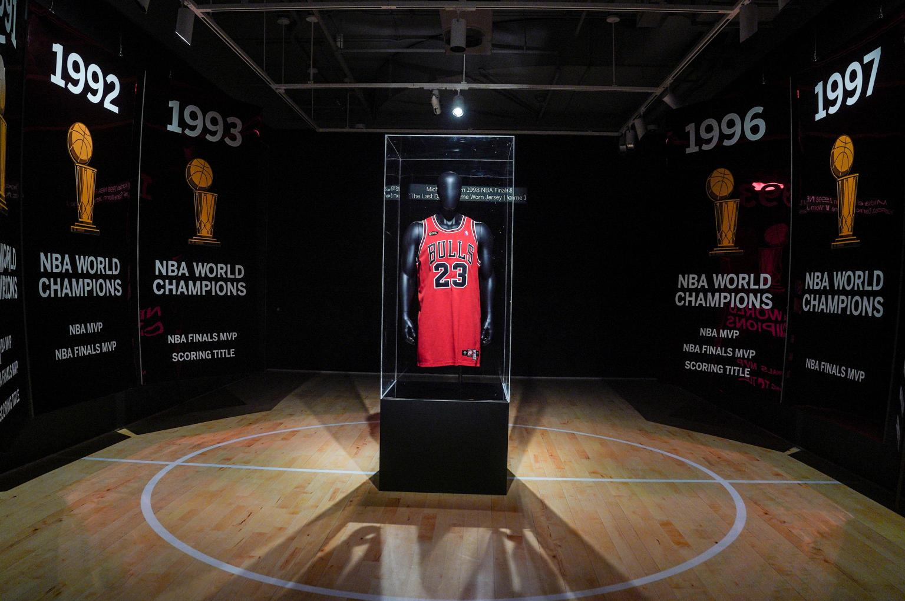